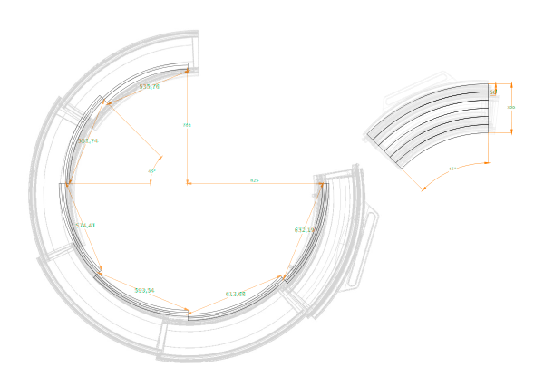

集噪圈
Noise-collecting barrier
單人使用，為第一層防護，能透過收和答快速移動，適用於短期與中施工通報。
防噪材質打造且採用具有拋物線曲線的倒錐形的形式，當噪音來自焦點時，將被向導向上方天空，以利減少周遭收到的噪音影響，降低施工環境的噪音分貝，以利察覺危險與溝通，塑造更安全舒適的施工環境。
Noise control
經過觀察，在小型的的道路施工中，破碎機是最常產生噪音的工具。且一般頻繁的小型施工類型為下水道施工﹑管線檢查居多，皆會在同一地點使用後頻繁小幅度移動。所以此類施工環境為此產品對主要防範目標。
產品防噪原理為將反射壁呈拋物線曲面，且將焦點與工具與地面碰撞點重和，根據物理原則在焦點附近產生的噪音會趨向平行朝向天空散射，此外反射壁採用高密度的金屬薄面以及洞洞結構，可以在達最佳反射和吸音效果下不增加產品太多重量。
